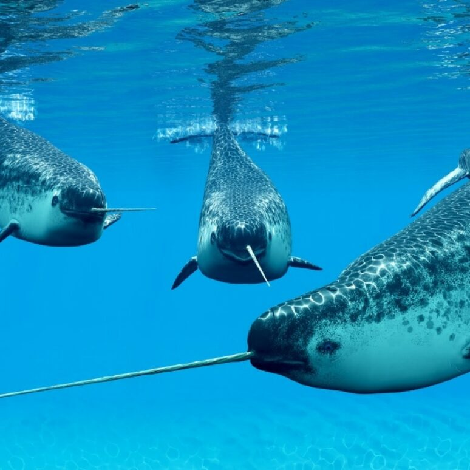

- swimming in the ocean
- causing a commotion
- cause they are so awesome
The narwhal (Monodon monoceros) is a species of toothed whale native to the Arctic. It is the only member of the genus Monodon and one of two living representatives of the family Monodontidae. The narwhal is a stocky cetacean with a relatively blunt snout, a large melon, and a shallow ridge in place of a dorsal fin. Males of this species have a spiralled tusk, which is a protruding left canine, that is 1.5–3.0 m (4.9–9.8 ft) long and thought to function as a secondary sexual characteristic, a weapon, a tool for feeding, or a sensory organ. Specially adapted slow-twitch muscles, along with the jointed neck vertebrae and shallow dorsal ridge allow for easy movement through the Arctic environment, where the narwhal spends extended periods at great depths. The narwhal's geographic range overlaps with that of the similarly built and closely related beluga whale, and the animals are known to interbreed.
